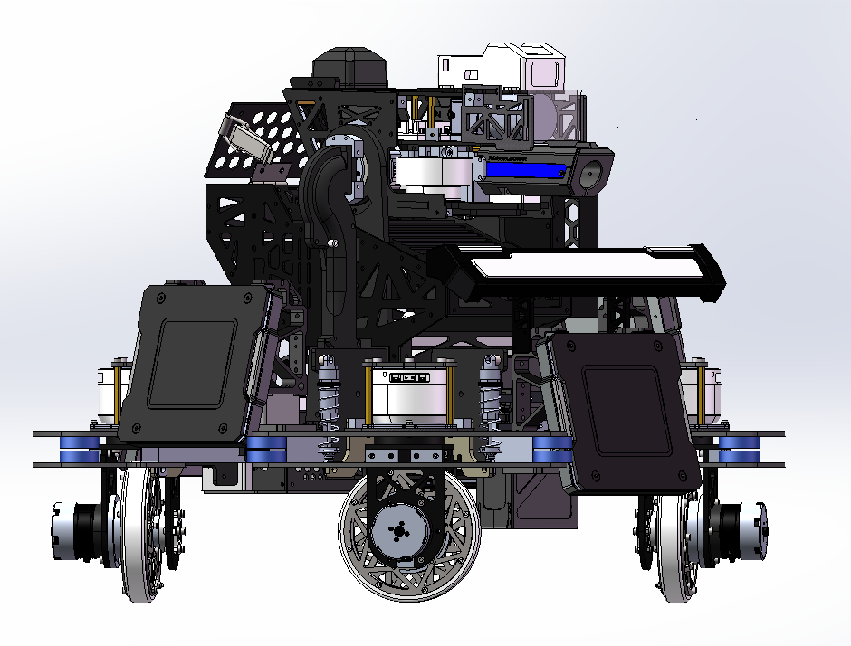

RoboMaster 步兵机器人 · 2024 赛季
角色与核心贡献
步兵机械设计师（与哨兵组负责人职务并行），以自研同步驱动系统重构遗留平台。
- 用同步驱动传动系统替换遗留麦轮平台，底盘减重约 45%；
- 将弹仓移至云台 yaw 旋转轴上，云台转动惯量降低超 40%；
- 在 100W 功率限制下实现底盘小陀螺 0.3 秒/圈。
为什么重新设计
战队的步兵机器人继承自 2019 赛季：麦克纳姆轮平台存在无法回避的轮组功率损耗、 底盘超重，且与 2023 哨兵一样，弹仓偏置把云台重心拖离了旋转轴。
改了什么
- 把我为哨兵开发的同步驱动轮组与自研减速箱适配进步兵的设计包络，解决底盘超重问题 （见传动系统深潜）。
- 弹仓移至云台 yaw 旋转轴上，云台转动惯量降低超过 40%。
>40%
云台转动惯量降低
0.3 秒
每圈，100W 功率限制下小陀螺
45%
底盘减重（对比遗留平台）
图片与视频

